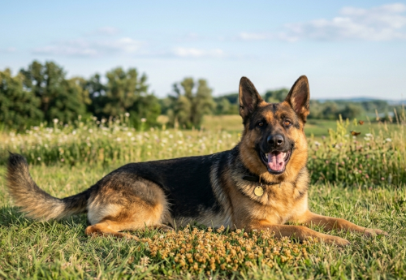
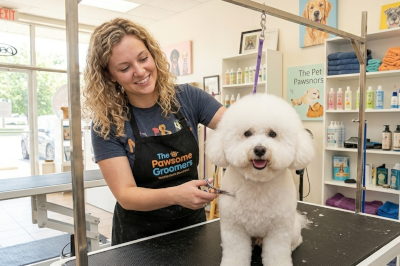
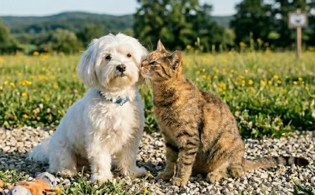
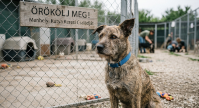

A pozitív megerősítés
Ismerd meg, miért hatékonyabb a jutalmazás alapú nevelés a kutyáknál.

Tudatos tápválasztás
Mire figyeljünk a csomagoláson? Hús részarány és a fontos vitaminok.

Kötelező oltások
Összegyűjtöttük, hogy milyen alapvető oltásokra van szüksége a kutyáknak.

Játékok otthonra
A fizikai fárasztás mellett a szellemi tréning is nagyon fontos.

Szőrápolási kisokos
Hogyan válasszunk kefét és milyen gyakran fürdessük a kedvencünket.

Kutya-macska barátság
Lépésről lépésre, hogyan alakíthatsz ki békés viszonyt a házban.

Örökbefogadás
Mire számíts, ha egy menhelyi kutyusnak adsz egy második esélyt.

Új kiskutya a háznál
Biztonsági lista: hogyan tegyük gyorsan kutyabiztossá a lakást.